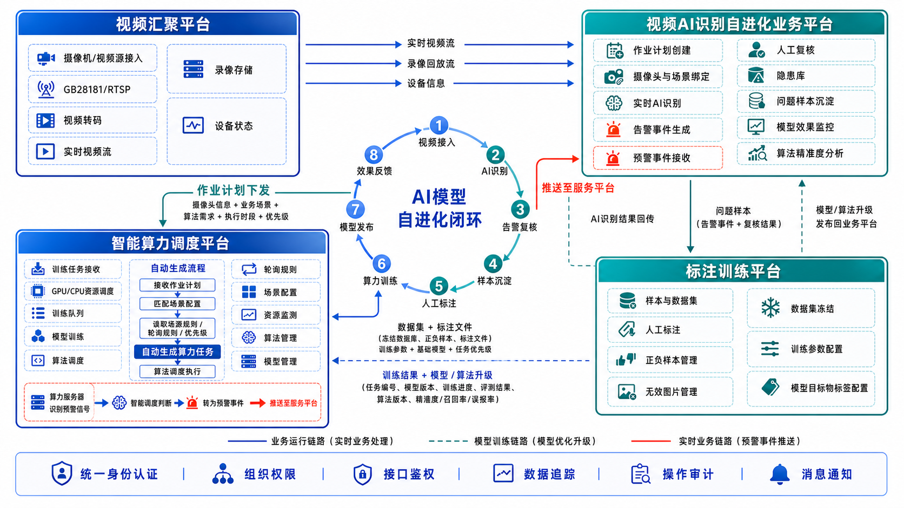

无视频不作业 · 四子系统完整数据流交互
视频汇聚平台 · 智能调度平台 · 无视频不作业业务系统 · 训练标注平台

1全局交互总览
视频汇聚平台（VAP）
- GB28181 / RTSP / ONVIF 接入
- 设备注册与在线状态
- 视频流转发与流地址服务
- 录像存储与回放
- 上下级平台级联
智能调度平台（ISP）
- 场景算力资源规则配置
- 轮询、并发与优先级策略
- 按场景自动生成算力任务
- 算法模型加载与版本管理
- 推理结果聚合与预警输出
无视频不作业业务系统
- 作业计划创建与启停
- 摄像头 + 业务场景 + 作业周期绑定
- 作业计划统一下发
- 违章预警展示、复核与处置
- 业务上下文权威数据源
训练标注平台（ATP）
- 样本接收与任务生成
- 预标注 / 人工标注 / 质检
- 数据集版本管理
- 模型训练与评估
- 模型导出与版本发布申请
- 不接入现场实时视频
对象存储（MinIO / OSS）
- 截图与帧样本
- 短视频片段
- 数据集文件
- 模型权重文件
- 平台间只传文件 URL
2平台间详细数据通道
视频汇聚平台（VAP）
- 设备接入、目录与状态
- RTSP 流地址生成
- 录像检索与回放
- 流媒体转发
① 设备 / 摄像头元数据同步
REST API / MQ · 设备ID、通道号、在线状态、位置
② 视频流拉取（核心实时通道）
调度请求流地址 → 汇聚返回鉴权 RTSP URL → 算力节点直连拉流
③ 录像 / 截图检索
REST API · 摄像头ID、起止时间、录像片段URL、截图URL
④ 心跳与运行状态
HTTP / MQ · 设备在线、流中断、拉流异常
智能调度平台（ISP）
- 按任务申请视频流
- 分配算力节点
- 下发算法与参数
- 监控流和节点状态
实时数据通道；视频流由算力节点按需直拉，不经过业务系统或训练标注平台。
无视频不作业业务系统
- 创建、编辑、启停作业计划
- 绑定摄像头、业务场景与作业周期
- 统一下发计划及场景编码
- 告警展示、复核与处置
- 模型质量看板
① 业务场景与调度场景映射
统一场景编码匹配；调度侧内置算法、模型、算力资源、轮询和默认优先级配置
② 作业计划统一下发
REST API · 作业计划ID、作业单号、摄像头ID集合、场景编码、起止时间、作业周期
③ 场景匹配并自动生成算力任务
匹配场景配置 → 读取算力资源 / 轮询 / 并发 / 优先级规则 → 拆分并创建算力任务
④ 推理结果 / 预警事件回传
Webhook / MQ · 标签、bbox、置信度、截图URL、事件时间
⑤ 作业计划与算力任务状态同步
待执行、执行中、暂停、完成、异常；执行进度、算力节点、异常原因
⑥ 模型效果指标回写
摄像头 / 场景 / 算法维度：误报率、漏报率、有效告警率
智能调度平台（ISP）
- 维护场景算力资源规则
- 维护轮询、并发与优先级策略
- 匹配场景并自动生成算力任务
- 分配节点、加载模型并执行推理
- 聚合预警和运行指标
业务系统是作业上下文与告警处置的权威源；智能调度平台承担实时推理编排。
无视频不作业业务系统
- AI预警核查数据
- 实时在线巡检人工履职标注
- 事后视频倒查标注
- 隐患库关联隐患台账
① 标注图片及难例样本汇聚
AI预警核查、实时巡检人工标注、事后倒查标注、隐患台账 → 训练平台数据集
② 标签字典双向同步
标签编码、标签名称、违章类型、启停状态、版本号
③ 业务上下文查询
作业单号 + 摄像头ID + 时间戳 → 作业状态、类型、人员信息
④ 标注 / 样本处理状态回告
样本接收状态、标注任务编号、处理进度、质检结果
训练标注平台（ATP）
- 自动创建标注任务
- 使用线上 bbox 预标注
- 人工修正与质检
- 形成标准训练数据集
离线 / 准异步交互；仅传样本元数据和对象存储 URL，不传原始视频二进制。
训练标注平台（ATP）
- 数据集版本冻结
- 模型训练与评估
- 模型权重导出
- 标签映射打包
① 训练任务申请
训练场景、数据集版本、算法类型、资源规格、优先级
② 训练状态回调
训练任务编号、排队 / 运行 / 完成状态、进度、指标与日志URL
③ 模型版本同步
模型版本、模型文件URL、标签字典、评估指标、适用场景
④ 发布状态回告
待验证、灰度、已发布、已回退；线上统一算法版本号
智能调度平台（ISP）
- 训练算力资源调度
- 模型包校验与加载
- 灰度切换与版本回退
- 线上模型版本管理
标注平台负责训练导出；模型加载、上线、灰度和回退由智能调度平台负责。
3一次实时 AI 预警任务的完整时序
camera + scene + schedulePOST /api/work-planssceneCode → policypolicy → compute tasksRTSP URL + tokenschedule + inferenceWebhook / MQ callback4一次样本回流到新模型上线的完整时序
样本元数据 + 文件URLYOLO / COCO / JSONLdataset → training → metricsmodel package metadataverify → canary → release5系统边界与对接原则
边界判定采用五个维度：系统负责什么、拥有什么权威数据、可以向外提供什么、可以从外部接收什么，以及明确禁止承担什么。
视频汇聚平台边界视频设备与媒体资源的统一接入、管理和分发域
| 核心职责 | 接入摄像头、NVR、DVR；维护设备目录和在线状态；提供实时流、录像检索、截图和回放能力；完成转码、转封装及国标级联。 |
|---|---|
| 权威数据 | 设备ID、通道号、设备名称与位置、在线状态、码流信息、录像索引、流地址生成规则。 |
| 对外提供 | 设备元数据、在线状态、鉴权后的 RTSP/HTTP-FLV/HLS 流地址、录像与截图文件 URL、流异常事件。 |
| 允许接收 | 智能调度平台的流地址申请、录像检索请求和心跳探测；设备侧的视频流及状态上报。 |
| 禁止事项 | 不管理作业单和违章业务；不决定使用哪个算法；不生成业务预警；不向训练标注平台持续推送实时视频。 |
| 故障影响 | 设备或流服务故障会影响实时分析与录像取证，但不应破坏既有业务台账、标注数据集和模型版本记录。 |
智能调度平台边界实时推理编排、算力控制与线上模型运行域
| 核心职责 | 接收分析任务，匹配场景规则，分配算力节点，加载模型，组织视频拉流推理，聚合过滤结果并输出预警事件。 |
|---|---|
| 权威数据 | 算力节点状态与负载、运行中任务状态、线上模型版本、模型加载状态、灰度策略、推理运行指标。 |
| 对外提供 | 任务执行状态、推理结果、预警事件、模型运行版本、模型效果指标、算力与服务健康状态。 |
| 允许接收 | 业务系统的任务和场景规则；汇聚平台的设备与流信息；训练标注平台的模型包 URL、标签字典和发布申请。 |
| 禁止事项 | 不维护作业业务主数据；不进行人工标注；不修改已冻结数据集；不允许训练标注平台直接控制线上算力节点。 |
| 故障影响 | 会影响新任务调度、实时推理和预警输出；业务系统历史台账、汇聚平台录像及标注平台离线作业仍可独立保留。 |
无视频不作业业务系统边界作业业务、预警处置与业务台账的权威域
| 核心职责 | 管理作业单、作业区域、人员与时段；配置业务场景；展示和复核预警；发起工单并形成隐患、违章处置闭环。 |
|---|---|
| 权威数据 | 作业单、作业状态、作业类型、作业人员、场景绑定、违章类型、人工复核结论、工单与业务台账。 |
| 对外提供 | 分析任务、业务场景和规则、业务上下文查询结果、标签字典、误报/漏报/难例样本元数据及文件 URL。 |
| 允许接收 | 智能调度平台的预警事件、任务状态、模型版本与效果指标；训练标注平台的样本接收及标注处理状态。 |
| 禁止事项 | 不直接连接算力节点执行推理；不加载或保存模型权重；不承担视频流转发；不把人工业务结论交由其他平台覆盖。 |
| 故障影响 | 影响任务发起、告警展示和处置闭环；已经运行的调度任务可按既定策略短时继续，但结果需缓存并等待业务恢复。 |
训练标注平台边界离线样本、数据集、训练与模型产出的研发域
| 核心职责 | 接收难例样本元数据，创建标注任务，执行预标注、人工标注与质检，管理数据集版本，训练评估并导出模型。 |
|---|---|
| 权威数据 | 标注任务、标注结果、质检结论、数据集内容与版本、训练任务记录、离线评估指标、模型产物元数据。 |
| 对外提供 | 标注处理状态、标准数据集 URL、训练状态、模型版本、模型文件 URL、标签字典、评估指标和发布申请。 |
| 允许接收 | 业务系统的难例/疑似样本和业务上下文；智能调度平台分配的训练资源、训练状态与模型发布结果。 |
| 禁止事项 | 不参与实时预警链路；不接收持续实时视频流；不直接发布模型到线上节点；不维护作业单和告警处置台账。 |
| 故障影响 | 只影响样本标注、数据集生产和新模型迭代，不应影响现场已有模型的实时推理、预警展示及工单处置。 |
跨系统统一边界原则
6岗位角色及其系统操作职责
| 岗位 | 角色 | 主要操作平台 | 岗位职责 | 主要系统操作 |
|---|---|---|---|---|
| 系统管理员 | 系统管理员 | 跨平台 | 维护组织、账号、岗位、权限及基础字典，保障各平台身份和权限口径一致。 | 组织机构维护、用户授权、角色分配、接口鉴权配置、操作日志与系统参数维护。 |
| 视频平台管理员 | 视频平台管理员 | 视频汇聚平台 | 负责摄像机、NVR/DVR及上下级平台接入，保障视频资源可用、目录准确。 | 设备注册、通道管理、在线状态巡检、流地址服务、录像检索、转码及级联配置。 |
| 安全值守人员 | 作业计划管理员 | 自进化业务平台 | 创建作业计划，完成摄像头、业务场景、算法需求、执行时段和优先级绑定并下发。 | 新建/编辑作业计划、选择摄像头与场景、配置周期和优先级、启停计划、下发及查看执行状态。 |
| 安全值守人员 | 监控值守与复核人员 | 自进化业务平台 | 监看实时预警，核实AI识别结果，并将误报、漏报和难例沉淀为改进样本。 | 查看实时监控、预警复核、确认或驳回告警、补录说明、标记问题样本、发起隐患或违章处置。 |
| 隐患指派的整改人 | 隐患处置人员 | 自进化业务平台 | 承接复核后的隐患与违章，落实整改、复查和销号，形成业务闭环。 | 接收工单、填写整改措施、上传整改凭证、提交复查、完成销号及查看处置台账。 |
| 调度平台运维管理员 | 算力调度管理员 | 智能算力调度平台 | 根据业务场景维护算力资源、轮询和优先级规则，保障任务自动生成和稳定执行。 | 场景配置、资源规则配置、轮询规则维护、任务优先级设置、资源监测、算法调度与异常任务干预。 |
| 调度平台运维管理员 | 算法与模型管理员 | 智能算力调度平台 | 维护算法、模型及其版本关系，审核模型上线并控制灰度、切换和回退。 | 算法管理、模型管理、版本校验、模型发布、灰度配置、运行版本切换及模型回退。 |
| 安全值守人员/合作伙伴 | 样本与数据集管理员 | 标注训练平台 | 汇聚业务问题样本，组织数据集生产，控制数据来源、版本、冻结与训练提交。 | 样本导入、正负样本管理、无效图片处理、数据集创建与冻结、训练参数配置、提交算力训练。 |
| 安全值守人员/合作伙伴 | 标注员 / 质检员 | 标注训练平台 | 依据算法与目标物标签规范完成图片标注、复核和质量验收，保证训练数据质量。 | 领取标注任务、目标框标注、样本判定、修改与删除标注、质检抽查、退回整改及确认通过。 |
职责分离原则：作业计划创建与算力规则配置、预警复核与隐患销号、数据标注与质量验收、模型生产与线上发布应由相应岗位分权操作；关键发布、回退和批量操作需保留审批及审计记录。